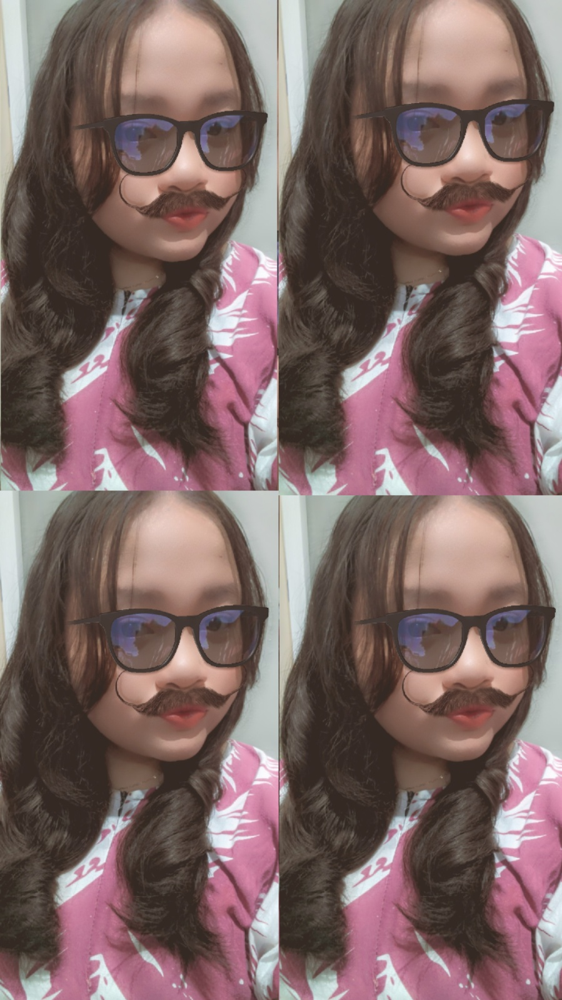
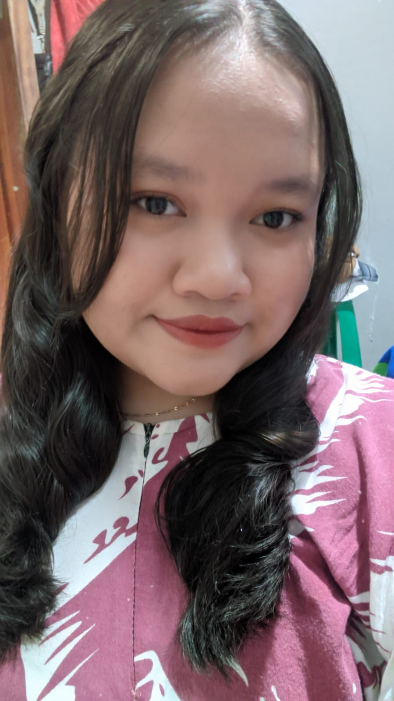
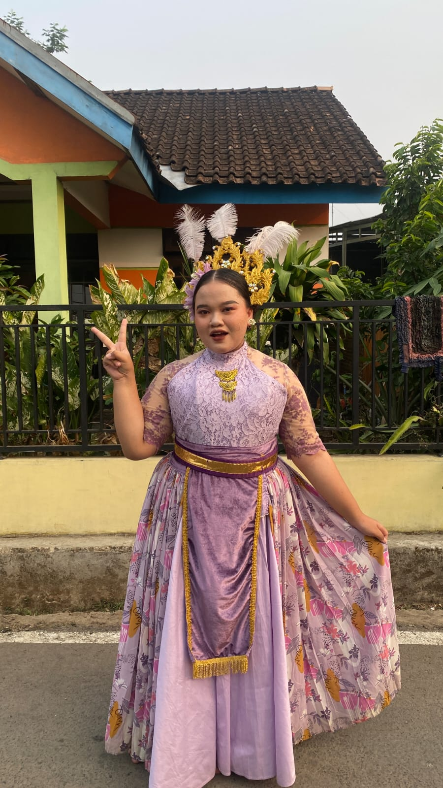
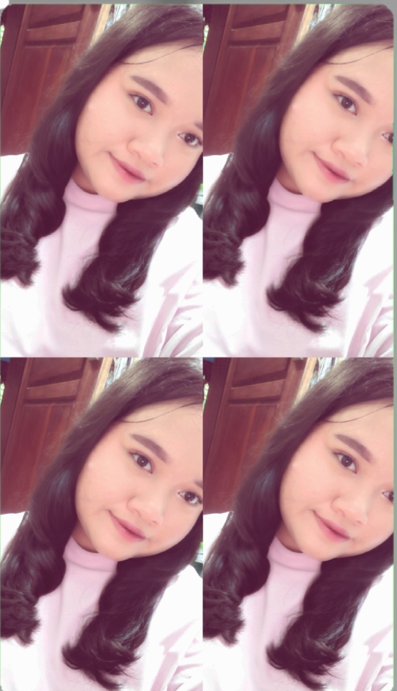

WEB PROFILE • XI RPL 2
Pelajar Rekayasa Perangkat Lunak yang senang mempelajari hal-hal baru, mencoba membuat karya digital, dan terus mengembangkan kemampuan di bidang teknologi.

01 — BIODATA
"
02 — GALERI FOTO
Beberapa foto untuk melengkapi web profile saya.



03 — TENTANG SAYA
Saya adalah Syaza Salma Ainia, seorang siswa kelas XI RPL 2 di SMK Negeri 3 Kendal. Saya merupakan pribadi yang suka mempelajari hal-hal baru dan tertarik dengan dunia teknologi, khususnya dalam bidang Rekayasa Perangkat Lunak.
Saya senang mencoba berbagai hal yang menarik, mendengarkan musik, menonton film, dan memasak. Dalam belajar, saya berusaha mengerjakan tugas dengan baik dan terus mengembangkan kemampuan yang saya miliki.
Saya berharap dapat menjadi pribadi yang lebih percaya diri, kreatif, dan memiliki kemampuan yang bermanfaat di masa depan.
04 — PENDIDIKAN
01
02
03
04
05
05 — ORGANISASI
Saat ini saya belum pernah mengikuti organisasi. Saya masih berfokus pada pembelajaran dan pengembangan kemampuan.
06 — KELEBIHAN
Terbuka untuk mempelajari hal-hal baru.
Berusaha memperhatikan detail dalam mengerjakan tugas.
Senang mencoba ide baru dalam membuat karya.
Berusaha menyelesaikan tugas dengan baik.
07 — PRESTASI
Saat ini belum ada prestasi yang ingin dicantumkan pada web profile ini.
08 — KOMPETENSI
09 — PORTOFOLIO
Contoh karya dan tugas yang pernah dikerjakan selama pembelajaran RPL.
Membuat website profile pribadi menggunakan HTML dan CSS.
HTML • CSSMerancang tampilan dan alur website perpustakaan.
Web • UIMembuat rancangan alur proses sistem secara terstruktur.
FlowchartMembuat rancangan database dan aliran data sebuah sistem.
Database • AnalisisMembuat rancangan antarmuka dan pengalaman pengguna.
UI/UXMembuat karya visual untuk kebutuhan tugas pembelajaran.
Design